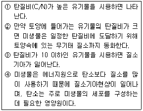

유기농업기능사 (2006-07-16 기출문제)
1과목: 작물재배
1. 작물재배에서 이랑만들기의 주된 목적으로 가장 적당한 것은?
- 작물의 습해 방지
- 토양건조 예방
- 잡초발생 억제
- 지온조절
(정답률: 77%)

2. 기지현상의 방지 및 경감대책과 가장 거리가 먼 것은?
- 담수
- 토양소독
- 객토
- 시설재배
(정답률: 72%)
3. 휴한지에 재배하면 지력의 유지증진에 가장 효과가 있는 작물은?
- 클로버
- 밀
- 보리
- 고구마
(정답률: 91%)
4. 다음 중에서 군락의 수광태세가 양호하여 광합성에 가장 유리한 벼의 초형은?
- 줄기가 직립으로 모여있고 잎이 넓으며 키가 큰 품종
- 잎이 특정한 방향으로 모여 있으면서 노화가 빠른 품종
- 줄기가 어느 정도 열려있고 상위엽이 직립인 품종
- 잎이 말려있고 아래로 처지거나 수평을 이루고 있는 품종
(정답률: 76%)
5. 작물의 요수량에 대한 설명 중 옳은 것은?
- 작물의 건물 1g을 생산하는데 소비되는 수분의 량
- 작물의 건물 100g을 생산하는데 소비되는 수분의 량
- 건물 1kg을 생산하는데 소비되는 증산량
- 건물 100kg을 생산하는데 소비되는 증산량
(정답률: 88%)
6. 형질이 다른 두 품종을 양친으로 교배하여 자손 중에서 양친의 좋은 형질이 조합된 개체를 선발하고 우량 품종을 육성하거나 양친이 가지고 있는 형질보다도 더 개선된 형질을 가진 품종으로 육성하는 육종법은?
- 선발육종법
- 교잡육종법
- 도입육종법
- 조직배양육종법
(정답률: 75%)
7. 다음 토양 입자의 크기 중 점토에 해당하는 것은?
- 입자 지름이 2mm 이상
- 입자 지름이 0.02 ~ 2 mm
- 입자 지름이 0.02 ~ 0.002mm
- 입자 지름이 0.002mm 이하
(정답률: 75%)
8. 도복 방지대책과 가장 거리가 먼 것은?
- 키가 작고 대가 튼튼한 품종을 재배한다.
- 서로 지지가 되게 밀식한다.
- 칼리질 비료를 시용한다.
- 규산질 비료를 시용한다.
(정답률: 74%)
9. 노후답의 개량방법으로 가장 거리가 먼 것은?
- 좋은 점토를 객토를 한다.
- 심토층까지 심경을 한다.
- 규산질비료를 시용한다.
- 함철자재의 시용은 억제한다.
(정답률: 66%)
10. 다음 사료작물 중 두과 사료작물에 해당하는 작물은?(오류 신고가 접수된 문제입니다. 반드시 정답과 해설을 확인하시기 바랍니다.)
- 라이그래스
- 호밀
- 옥수수
- 앨퍼퍼
(정답률: 72%)
11. 작물의 발달과 관련된 용어의 설명 중 틀린 것은?
- 작물이 원래의 것과 다른 여러 갈래로 갈라지는 현상을 작물의 분화라고 한다.
- 작물이 환경이나 생존경쟁에서 견디지 못해 죽게 되는 것을 순화라고 한다.
- 작물이 점차 높은 단계로 발달해 가는 현상을 작물의 진화라고 한다.
- 작물이 환경에 잘 견디어 내는 것을 적응이라 한다.
(정답률: 92%)
12. 일반적으로 작물생육에 가장 알맞은 토양 조건은?
- 토성은 수분, 공기, 양분을 많이 함유한 식토나 사토가 가장 알맞다.
- 토층은 작토가 깊고 영호하며, 심토는 투수성과 투기성이 알맞아야 한다.
- 토양구조는 홑알구조로 조성되어야 한다.
- 질소, 인산, 칼리 등 비료 3 요소는 과잉될수록 좋다.
(정답률: 77%)
13. 벼를 재배할 경우 발생되는 주요 잡초가 아닌 것은?
- 방동사리, 강피
- 망초, 쇠비름
- 가래, 물피
- 물달개비, 개구리밥
(정답률: 78%)
14. 멀칭의 효과에 대한 설명 중 틀린 것은?
- 지온조절
- 토양, 비료, 양분 등의 유실
- 토양건조 예방
- 잡초발생 억제
(정답률: 84%)
15. 수분이 포화된 상태의 토양에서 증발을 방지하면서 중력수를 완전히 배제하고 남은 수분 상태를 말하며, 작물이 생육하는데 가장 알맞은 수분 조건은?
- 포화 용수량
- 흡습 용수량
- 최대 용수량
- 포장 용수량
(정답률: 79%)
16. 다음 중 답전윤환의 효과와 가장 거리가 먼 것은?
- 연작장해의 경감
- 잡초의 감소
- 작물 기지의 회피
- 토양의 단립 구조화
(정답률: 78%)
17. 다음 중 냉해에 대한 작물의 피해현상과 가장 거리가 먼 것은?
- 등숙 지연
- 병해 발생
- 불임 현상
- 세포내 결빙
(정답률: 60%)
18. 생력재배의 효과와 가장 거리가 먼 것은?
- 농업노력비의 경감
- 품질의 저하
- 재배면적의 증대
- 단위수량의 증대
(정답률: 82%)
19. 물에 잘 녹고 작물에 흡수가 잘되어 밭작물의 추비로 적당하지만, 음이온 형태는 토양에 잘 흡착되지 않아 논에서는 유실과 탈질현상이 심한 질소질 비료의 형태는?
- 질산태질소
- 암모니아태질소
- 시안아미드태질소
- 단백태질소
(정답률: 70%)
20. 다음 중 생물학적 방제법에 속하는 것은?
- 윤작
- 병원미생물의 사용
- 온도 처리
- 소토 및 유살처리
(정답률: 90%)
2과목: 토양관리
21. 토양에 시용한 유기물의 역할로 가장 적합하지 않은 것은?
- CEC를 증가시킨다.
- 수분보유량을 증가시킨다.
- 유기산이 발생하여 토양입단을 파괴한다.
- 분해되어 작물에 질소를 공급한다.
(정답률: 83%)
22. 지하수위가 높은 저습지 또는 배수가 불량한 곳은 물로 말미암아 Fe3+→Fe2+로 되고 토층은 담청색~녹청색 또는 청회색을 띤다. 이와 같은 토층의 분화를 일으키는 작용을 무엇이라 하는가?
- Podzol화 작용
- Latsol화 작용
- Glei화 작용
- Siallit화 작용
(정답률: 75%)
23. 성대성 토양 중 토양생성에 가장 큰 영향을 미치는 토양 생성인자는?
- 모재
- 기후
- 지형
- 지하구조
(정답률: 72%)
24. 양이온치환용량(CEC)이 10 cmol(+)/kg 인 어떤 토양의 치환성염기의 합계가 6.5 cmol(+)/kg 라고 할 때, 이 토양의 염기포화도는?
- 13%
- 26%
- 65%
- 85%
(정답률: 79%)
25. 우리나라 제주도 토양을 구성하는 모암으로 어두운 색을 띠며 치밀한 세립질의 염기성암으로 산화철이 많이 포홤되어 있다. 이러한 모암이 풍화되어 토양으로 전환되면 황적색의 중점식토로 되고 장석은 석회질로 전환되는 이 모암은?
- 화강암
- 석회암
- 현무암
- 석영조면암
(정답률: 86%)
26. 유효수분이 보유되어 있는 공극은?
- 대공극
- 기상공극
- 모관공극
- 배수공극
(정답률: 83%)
27. 토양에서 암거배수에 의한 효과로 가장 적절한 것은?
- CEC 증가
- 인산유효도 증가
- 배수력 증가
- 이력현상 증가
(정답률: 70%)
28. 토양 염류 집적 방지 대책 중 염류를 제거하는데 가장 적합한 방법은?
- 작물 수확 후 토지를 그대로 방치한다.
- 담수한 후 경운하고 얼마 후에 물을 뺀다.
- 비닐하우스에 경제적인 이득을 위하여 한 품목만 재배한다.
- 최소 깊이의 경운을 실시하여 토양을 반전시킨 후 계속해서 경작한다.
(정답률: 81%)
29. 다음 유기물 중 토양 내에서 분해속도가 가장 빠른 것은?
- 나무껍질
- 보릿짚
- 톱밥
- 녹비
(정답률: 59%)
30. 암석의 화학적인 풍화작용을 유발하는 현상이 아닌 것은?
- 산화작용
- 가수분해 작용
- 수축팽창작용
- 탄산화작용
(정답률: 73%)
31. 작물에 대한 미생물의 유익작용이 되지 못하는 것은?
- 길항작용
- 탈질작용
- 입단화작용
- 질소고정작용
(정답률: 78%)
32. 다음 중 밭토양이나 삼림지에서 유실이 가장 빠른 원소는?
- Na
- Ca
- Mg
- K
(정답률: 49%)
33. 토양 구조의 발달에 불리하게 작용하는 요인은?
- 석회물질의 시용
- 퇴비의 시용
- 토양의 피복관리
- 빈번한 경운
(정답률: 88%)
34. 일반적으로 유기물이 많이 함유되어 있는 토양은 대부분 어떤 빛깔을 띠는가?
- 흑색
- 흰색
- 적색
- 녹색
(정답률: 83%)
35. 다음 중 질소기아현상을 옳게 설명한 것으로 묶은 것은?

- ①, ②
- ②, ③, ④
- ①, ②, ③, ④
- ①, ③, ④
(정답률: 53%)
36. 토양염기에 포함되는 치환성양이온이 아닌 것은?
- Na+
- S++
- K+
- Ca++
(정답률: 61%)
37. 포장용수량과 위조계수가 각각 40%, 5% 일 때 이 토양의 유효수분은?
- 5%
- 35%
- 40%
- 45%
(정답률: 68%)
38. 다음 토양 중 투수가 잘 되어 토양의 환원상태가 오랫동안 유지되지 못하는 토양은?
- 저습지토양
- 유기물이 많은 토양
- 점질토양
- 사질토양
(정답률: 65%)
39. 토양의 공극이 수분으로 완전히 포화되었을 때 이 토양의 pF는?
- 0
- 3
- 4.18
- 7
(정답률: 67%)
40. 벼를 재배하고 있는 논토양의 색깔이 청회색을 나타내면 어떠한 조치를 하는 것이 가장 바람직한가?
- 유기물을 투여한다.
- 배수를 한다.
- 유안비료를 시용한다.
- 물을 깊이 대어 준다.
(정답률: 62%)
3과목: 유기농업일반
41. 과수원에서 쓸 수 있는 유기재료로 가장 적합하지 않은 것은?
- 현미식초
- 생선액비
- 생장촉진제
- 광합성 세균
(정답률: 80%)
42. 다음 중 과수분류상 인과류에 속하는 것으로만 나열된 것은?
- 무화과, 복숭아
- 포도, 비파
- 사과, 배
- 밤, 포도
(정답률: 79%)
43. 멘델의 법칙과 가장 관련이 없는 것은?
- 분리의 법칙
- 독립의 법칙
- 지배의 법칙
- 최소의 법칙
(정답률: 75%)
44. 오리농법에 의한 벼재배에서 오리의 역할이 아닌 것은?
- 잡초를 못 자라게 한다.
- 해충을 잡아 먹는다.
- 도열병균을 잡아 먹는다.
- 배설물은 유기질비료가 된다.
(정답률: 80%)
45. 유기농업애서는 화학비료를 대신하여 유기물을 사용하는데 유기물의 시용효과가 아닌 것은?
- 완충능 증대
- 미생물의 번식 조장
- 보수 및 보비력 증대
- 지온 감소 및 염류집적
(정답률: 81%)
46. 품종의 보호요건 항목이 아닌 것은?
- 구별성
- 내염성
- 균일성
- 안정성
(정답률: 70%)
47. 남부지방의 논에 녹비작물로 이용되며 뿌리혹박테리아로 질소를 고정하는 식물은?
- 진주조
- 자운영
- 호밀
- 유채
(정답률: 65%)
48. 답전윤환 체계로 논을 밭으로 이용할 때, 유기물이 분해되어 무기태질소가 증가하는 현상을 무엇이라 하는가?
- 산화작용
- 환원작용
- 건토효과
- 윤작효과
(정답률: 48%)
49. 다음 농산물 중 친환경농산물로 품질인증이 되지 않는 것은?
- 천연우수농산물
- 저농약농산물
- 전환기유기농산물
- 유기농산물
(정답률: 60%)
50. 다음 중 윤작의 효과가 아닌 것은?
- 지력의 유지 증강
- 기지 현상의 회피
- 병해충 경감
- 잡초의 번성
(정답률: 89%)
51. 계속하여 볏짚을 논에 투입하는 유기벼 재배에서 가장 결핍될 것으로 예상되는 토양 양분은?
- 질소
- 인산
- 칼리
- 칼슘
(정답률: 42%)
52. 다음 작물 중 C/N율이 가장 높은 것은?
- 화본과 작물
- 두류 작물
- 서류 작물
- 채소류 작물
(정답률: 50%)
53. 다음 중 물리적 종자 소독방법이 아닌 것은?
- 냉수온탕법
- 욕탕침법
- 온탕침법
- 분의소독법
(정답률: 78%)
54. 다음 중 세균성 병원균이 주원인인 병은?
- 벼 도열병
- 사과, 배의 검은별무늬병
- 토마토의 풋마름병
- 담배모자이크병
(정답률: 52%)
55. 미부숙 퇴비가 작물의 생장에 미치는 영향에 대한 설명으로 틀린 것은?
- 병원균의 생존으로 식물에 침해를 줄 수가 있다.
- 악취를 발생하여 인축에 위해성을 유발할 수가 있다.
- 가스가 발생하여 작물에 해를 입힐 수 있다.
- 토양산소 함량을 증가시킬 수 있다.
(정답률: 74%)
56. 다음에서 육종의 단계가 순서에 맞게 배열된 것은?
- 변이탐구와 변이창성 – 변이선택과 고정 – 종자증식과 종자보급
- 변이선택과 고정 – 변이탐구와 변이창성 – 종자증식과 종자보급
- 종자증식과 종자보급 – 변이탐구와 변이창성 – 변이선택과 고정
- 종자증식과 종자보급 – 변이선택과 고정 - 변이탐구와 변이창성
(정답률: 64%)
57. 볍씨의 발아최적온도는?
- 8~13℃
- 15~20℃
- 30~34℃
- 40~44℃
(정답률: 75%)
58. 시설 내의 약광조건 하에서 작물을 재배할 때 경종 방법에 대한 설명 중 옳은 것은?
- 엽채류를 재배하는 것은 아주 불리함
- 재식 간격을 좁히는 것이 매우 유리함
- 덩굴성 작물은 직립재배보다는 포복재배하는 것이 유리함
- 온도를 높게 관리하고 내음성 작물 보다는 내양성 작물을 선택하는 것이 유리함
(정답률: 64%)
59. 밀폐된 창고나 온실에서 약제를 가스로 발생시켜 병충해를 방제하는 방법은?
- 연무법
- 미량살포법
- 훈증법
- 관주법
(정답률: 61%)
60. 초생재배의 장점이 아닌 것은?
- 토양의 단립화
- 토양침식 방지
- 지력증진
- 미생물증식
(정답률: 73%)